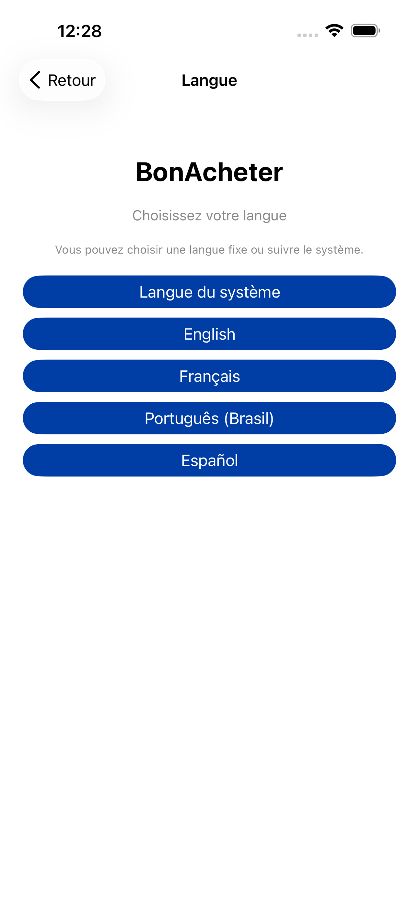
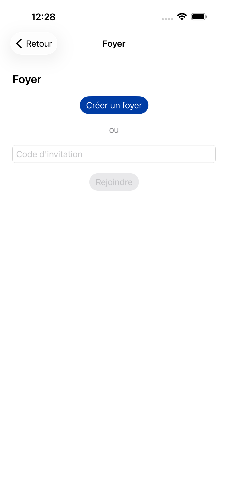
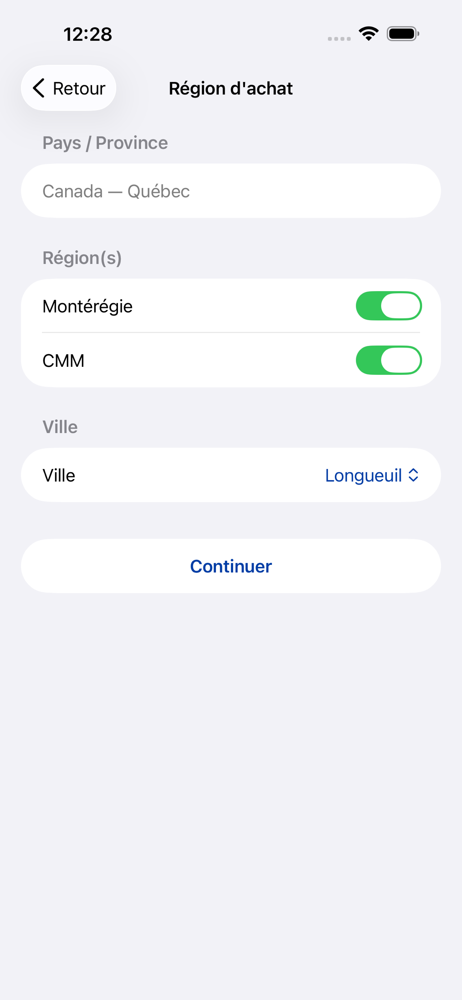
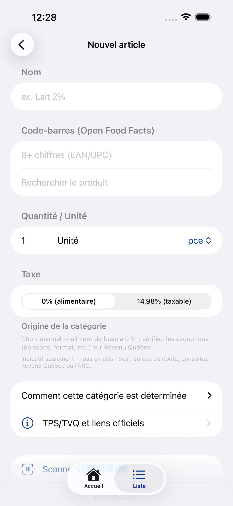

Lista da casa
Centralize os artigos do lar, quantidades, unidades e categoria tributável de forma simples e legível.
O BonAcheter nasceu para tornar a rotina de mercado mais leve: organizar a lista da casa, acompanhar gastos por período e mostrar uma estimativa simples de TPS/GST e TVQ/QST quando isso ajuda no orçamento. Tudo com uma experiência iPhone limpa, rápida e pensada para famílias e lares multilíngues.
Em vez de só listar itens, o BonAcheter conecta lista, histórico de preços, orçamento por período e contexto fiscal do Québec em uma mesma jornada.
Centralize os artigos do lar, quantidades, unidades e categoria tributável de forma simples e legível.
Veja quanto já foi gasto no período e quanto ainda resta sem precisar entrar em telas complexas.
Marque itens comprados, informe preços pagos e acompanhe histórico por produto e por loja.
O produto assume Canadá/Québec como ponto de partida e explicita quando a lógica é apenas indicativa para orçamento.
As imagens abaixo foram capturadas a partir da interface iOS do próprio projeto para refletir o produto como ele existe hoje.
Entrada rápida para começar, entrar com conta existente ou criar uma conta por e-mail.

Fluxo inicial preparado para lares multilíngues e configuração rápida no primeiro uso.

Crie um lar ou entre com código de convite para manter a lista sincronizada na mesma casa.

Configuração focada no Québec com seleção de região e cidade de compra.
Resumo do budget, atalhos rápidos e acesso direto às tarefas principais do dia a dia.
Itens, progresso do budget e histórico de preço em uma interface leve e fácil de consultar na loja.

Cadastro manual ou por código de barras com quantidade, unidade e categoria tributável visível.
A identidade proposta mantém o símbolo de sacola que o app já usa, mas sobe o nível visual com um monograma “B” mais forte, azul Québec como cor principal e geometria mais premium. O resultado funciona bem em favicon, hero, social card e pode orientar uma futura evolução do ícone da App Store.
O site já deixa visíveis os links normalmente esperados em uma ficha de app: suporte, política de privacidade e explicações públicas sobre conta/dados.
A página de suporte centraliza visão geral do app, FAQ, fluxos principais e canal público para dúvidas.
A política de privacidade descreve o uso atual do MVP: dados locais no dispositivo, passkeys no ecossistema Apple e consultas públicas ao Open Food Facts.
A página de conta explica como o MVP trata contas locais, verificação de e-mail e remoção de dados armazenados no dispositivo.
O produto não se apresenta como ferramenta fiscal oficial. Quando mostra linhas tributáveis, deixa claro que se trata de uma estimativa útil para orçamento familiar, não de conformidade fiscal de retalhistas.
As referências oficiais publicadas pelo projeto continuam apontando para Revenu Québec e Canada Revenue Agency.